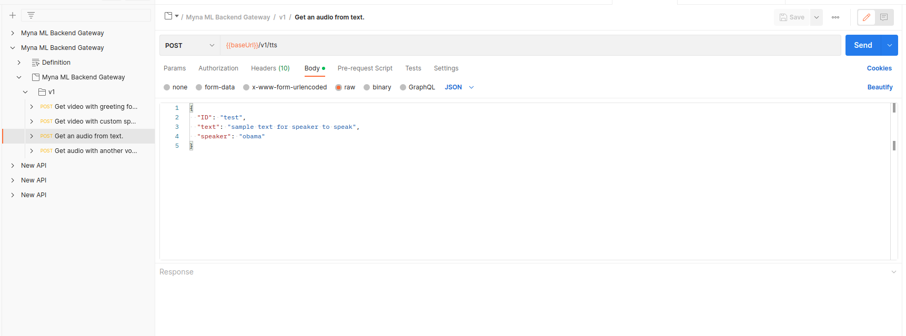

Postman
- Скачайте https://www.postman.com/downloads/
- Верхний левый угол: File→Import → Link → https://gateway.neiro.ai/swagger/api.swagger.json
- Теперь можно выбрать разные методы, интерактивно послать запросы, посмотреть на разные варианты ответов. В целом разница со Swagger в том, что это более интерактивный http-клиент, чем сайт. Проще отдать стороннему клиенту
